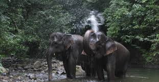
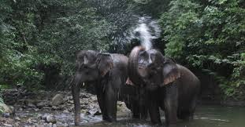

Way Kambas
Semua Tentang Way Kambas
East Lampung Regency, Lampung
Pusat Konservasi Gajah
Pada dasarnya Taman Nasional Way Kambas melakukan pengelolaan keanekaragaman hayati yang bersifat masih liar baik flora ataupun faunanya, salah satu jenis satwa liar yang dikelola secara lebih intensif adalah Gajah Sumatera yang ditempatkan dalam satu tempat yang lebih dikenal dengan sebutan PLG (Pusat Latihan Gajah).
Dengan semakin berkembangnya pengelolaan waykambas ternyata, PLG mampu menarik wisatawan yang ingin melihat dari dekat aktivitas gajah yang telah dijinakkan.
Pada awalnya, pendirian Pusat latihan gajah Way Kambas ditujukan untuk mengurangi konflik antara gajah dengan manusia. Harapan kedepan pusat latihan gajah harus mampu menjadi pusat konservasi gajah sumatera dengan kualitas breeding-nya, pusat wisata unggulan di Propinsi Lampung. Untuk itu, perlu ditunjang dengan ketrampilan gajah yang memadai, kesehatan dan nutrisi gajah, dan pelayanan yang prima.

 

Way Kanan Resort
Wilayah SPTN I Way Kanan, khususnya resot Way Kanan, merupakan salah satu tujuan wisata alam penting di Taman nasional way kambas (TNWK), khususnya wisatawan minat khusus dengan kegiatan-kegiatan adventurir dan penelitian.
Pengamatan satwa di Resort Way Kanan.
Selain memiliki ragam tipe ekosistem dengan kondisi hutan yang relatif utuh, resot way kanan juga memiliki letak strategis untuk menjangkau lokasi-lokasi wisata alam menarik lainnya (Kalibiru, Kuala Kambas, Wako).
Di sepanjang sungai Way Kanan hingga pantai Kuala Kambas, terdapat gradasi tipe ekosistem yang menarik, dimulai dengan ekosistem riparian, hutan payau sampai pada hutan mangrove dan hutan pantai. Berdekatan dengan alur sungai tersebut juga terdapat ekosistem hutan hujan dataran rendah dan rawa.
Dari kunjungan wisatawan mancanegara ke Way Kanan, tercatat lebih dari 75 persen motivasi kunjungan adalah untuk kegiatan pengamatan burung (birdwatching). Adanya jenis burung langka seperti jenis mentok rimba (Cairina scutulata), beberapa jenis rangkong, elang dan banyak jenis burung lainnya, menjadi daya tarik utama kawasan ini.
Beberapa faktor penunjang lainnya bagi wisata alam pada kawasan waykanan resort antara lain terdapatnya fasilitas.
Dermaga dan sarana transportasi air (kapal motor)
adanya jungle track sepanjang 2 km dengan jalan setapak yang tertata dan sarana interpretasi yang memadai.
Sarana penunjang wisata alam yang juga tersedia antara lain kafetaria, penginapan, gazebo, mushola, MCK, dan unit perkantoran.
Kegiatan/Paket Wisata yang Menjadi Prioritas Pengembangan
Dari potensi yang ada serta memperhatikan segmen wisata yang telah terbangun, maka beberapa kegiatan wisata yang menjadi prioritas untuk dikembangkan di SPTN I Way Kanan, antara lain :
- Birdwatching
- Safari menyusur sungai (Way Kanan- Kuala Kambas, Kali Biru)
- Atraksi budaya nelayan
- Monitoring habitat buaya muara,
- Monitoring habitat harimau sumatera
- Pengamatan Siamang (Symphalangus syndactylus)
- Jungle Tracking